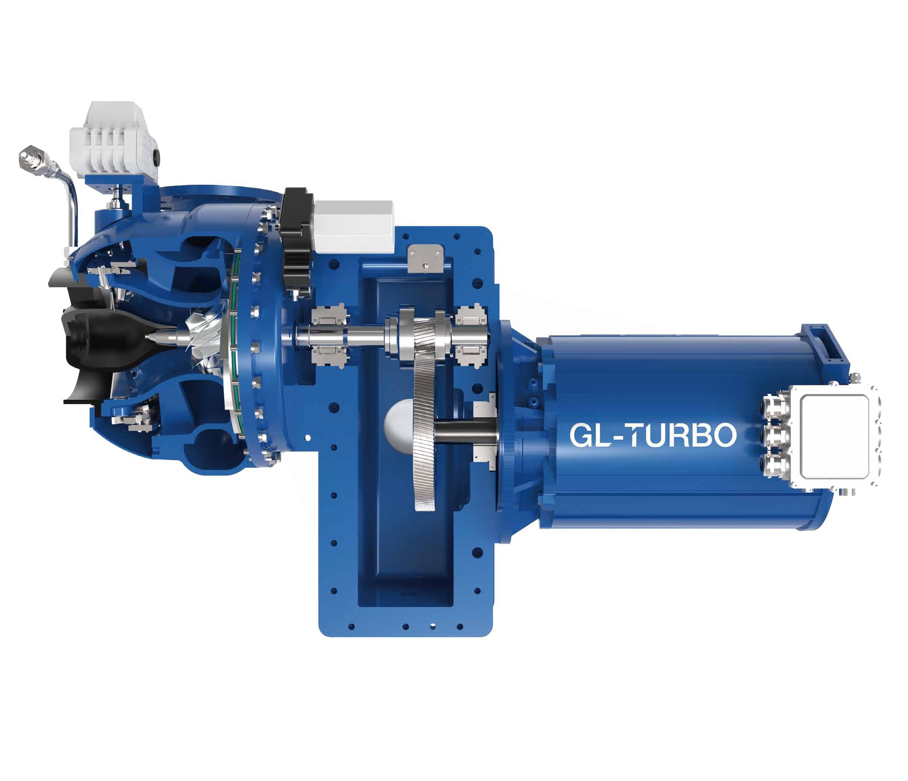
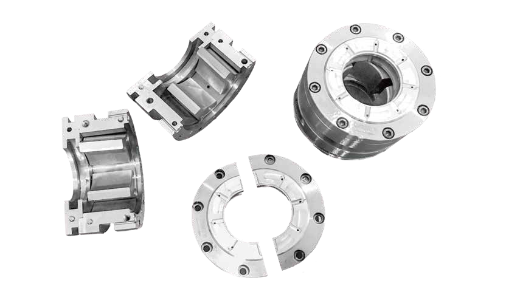

GA-Hybrid
GA Hybrid Turbo Blower
50–400 kW | 1,600–17,000 m³/h | 0.3–1.7 bar pressure rise
GA-Hybrid combines geared blower technology with a permanent magnet motor and variable frequency drive. Inlet guide vanes, a variable vane diffuser, and speed control provide three complementary ways to adjust performance as demand changes.
- Dual-vane control and VFD support a broad flow range and efficient operation.
- Hydrodynamic tilting-pad journal bearing on the high-speed pinion.
- Combined journal and thrust bearing on the motor shaft.
- Permanent magnet motor mounted directly to the gearbox for a compact arrangement.
- Designed for process demands such as wastewater aeration.
Three-Way Control
Inlet guide vanes, the variable vane diffuser, and the VFD work together to regulate flow and match changing discharge-pressure requirements.
Hydrodynamic Bearings
Lubricating oil films separate bearing surfaces during operation. The bearing arrangement supports both radial and axial loads.
Integrated Drive
The permanent magnet motor operates at approximately 6,000 rpm, with the bull gear mounted on the motor rotor for a compact drive system.